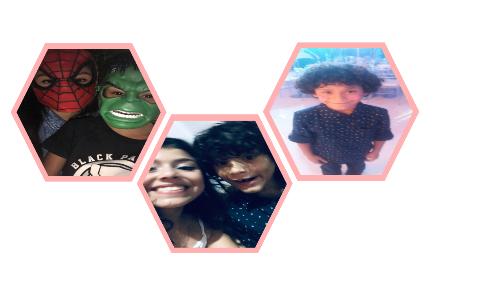

Endereço, e-mail e contatos
Avenida das Oliveiras 08, Novo Israel - Manaus, AM - Brasil
Nascimento: 20 de janeiro de 2002
 Mobile/WhatsApp: +55 92 9.8853-9961
Mobile/WhatsApp: +55 92 9.8853-9961
E-mail: hanahcorreay@gmail.com
 Instagram: @hanahss_
Instagram: @hanahss_
 Facebook: Hanah Israely
Facebook: Hanah Israely
Qualificações Acadêmicas
- Ensino Médio
- Ensino Fundamental
FMM - Fundação Matias Machline
Manaus, AM - Brasil
2017 - Até o presente momento
IETBO - Instituto de Ensino Tiago Brandão de Oliveira
Manaus, AM - Brasil
2005-2012
CETI - Centro Educacional de Tempo Integral Zilda Arns Neumann
Manaus, AM - Brasil
2013-julho/2014
EEAPV - Escola Estadual Antogildo Pascoal Viana
Manaus, AM - Brasil
julho/2014 - dezembro/2014
CMPM - Colégio militar da Polícia Militar Marcantônio Vilaça 2
Manaus, AM - Brasil
2015-2016
Histórico de Experiência Acadêmica
- Aluna Legião de Honra e SubTenente
- Curso Internet das Coisas - IoT
- Líder do Cronograma no Projeto Blog Moetá da Literatura
CMPM - Marcantônio Vilaça 2
Matéria: Todas
Requisito: Notas Globais maiores ou iguais a 9
Função: Representar a escola em eventos
Janeiro/2016 - Dezembro/2016
FMM - Fundação Matias Machline
Matéria: Fundamentos da Informática
Setembro/2017 -Setembro/2017
FMM - Fundação Matias Machline
Matéria: Língua Portuguesa
Função: Gerenciar os grupos que compunham a equipe do Blog no quesito prazos
Setembro/2018 - Outubro/2018
Histórico de Experiência Profissional
- Vendedora de Brigadeiros Gourmet
- Dona da lojinha online Grace Store
Descrição de Atividades: fabricação e vendas, gerenciamento do capital
Período: Abril/2018 até Dezembro/2018.
Clientes: alunos da Fundação
Descrição de Atividades: Design, artesã, vendas e marketing
Período: Janeiro/2019 até o presente momento.
Clientes: pessoas interessadas em papelaria.
Idiomas
Italiano (Básico/ Básico/Básico) - Educação Ativa Idiomas
Inglês (Básico/Básico/Básico) - Fundação Matias Machline
Português: nativa
Outras Áreas de Interesse
- Dança ministerial, contemporânea e ballet clássico
- Lettering
- Papelaria em geral
- Artesanato e Encadernação
- Ações sociais na área infantil
- Gosto de ler romances e curiosidades.
- Amo plantar flores e plantas, gosto de mexer na terra e ver as coisas crescendo.
Maior Ato de Coragem realizado em Vida
Ainda não o realizei !
Maior Medo em Vida
Tenho medo de aranhas por que não gosto da aparência delas, tenho medo de elas me picarem e me deixarem muito mal, como se vê em casos de picadas de aranhas venenosas. E também por que quando eu era pequena, uma ficou no meio dos sapatos e quando eu fui pegar minha sapatilha, ela pulou em mim, e era realmente muito grande eu entrei em pânico, foi horrível!
Descreva o dia em que teve mais Sorte na vida
Acho que já tive muitos dias de sorte, como por exemplo, quando achei 50 reais enquanto brincava na igreja com minha prima. Mas um dia em que eu tive muita sorte foi o dia em que minha mãe foi chamada para adotar um bebê, e eu queria tanto um irmãozinho, me senti uma das pessoas mais sortudas do mundo por ter encontrado um bebê tão pequeninho e fofo para cuidar. Mesmo que eu não tenha tanta paciência, aquele foi um dia de sorte para mim.
Animais de estimação
Eu amo muito cachorros, tínhamos um pinscher chamado Rex mas ele faleceu no ano passado, então adotamos um vira- lata e o chamamos de Ursão, por que quando ele era filhote, ele parecia um ursinho muito fofo. Mas ele não pôde ficar com a gente e foi pra casa da minha avó. Eu tenho um jabuti pequeninho que gosto muito também, e mais três galinhos ganizé.
Time de Coração
Eu gosto de assistir os jogos de vários esportes, principalmente vôlei, handebol, e futsal. Gosto de torcer para o Brasil, mas de outros times eu só gosto de assistir por diversão mesmo, não para torcer, ficar feliz ou triste pela perda ou vitória. Considero tudo algo legal.
Meu herói
Meu herói é Jesus, simplesmente por ter vivido e morrido por amor a mim. Mas meus pais também podem ser considerados meus heróis, por cuidar e me amar tanto, por nunca desistir de mim, mesmo que isso seja da natureza dos pais, cuidar de alguém e dedicar-lhe a vida inteira, exige sacrifício e é o que eles fazem por mim.
Minhas músicas favoritas
Videos que eu gosto
Alguns Sonhos
Por que Informática
Eu não sou dessa área, mas gosto de ajudar outras pessoas com esse projeto. Primeiramente pensei que informática era mais fácil, mas não é muito não. Entrei para FMM por que era a minha melhor opção de ensino de qualidade.